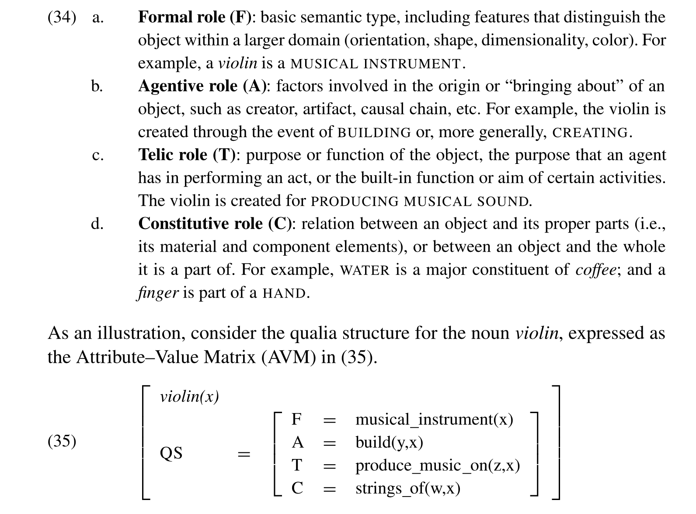

Week 5 Word Meaning (II)
今天主題
- 詞彙關係、詞彙網路、知識本體
- 事件語意與計算表徵
CWN 2.0
CWN 2.0 is a manually curated Chinese Wordnet that contains 29,231+ Chinese words and their lexical semantic relations. introductory slide.
資訊抽取 (Information Extraction)
a subfield of natural language processing (NLP)
The process of information extraction (IE) turns the un/semi-structured information embedded in texts into structured data.
Main tasks of IE include:
- Named entity recognition
- Relation extraction
- Event extraction; Template filling
- Coreference resolution
- Temporal expression recognition
- Semantic role labeling
- etc.
In-class exercise.1
Create a tiny knowledge graph based on the news article in Chapter 21 of the textbook. 參考
關係是什麼？
Relation extraction is the task of identifying and classifying semantic relations between pairs of entities in text.
Types of linguistic relations:
- Lexical (semantic) relations (e.g., synonymy, antonymy, hyponymy, etc.)
- Syntactic relations (e.g., subject, object, etc.)
- Semantic relations (e.g., causality, entailment, etc.)
- Pragmatic relations (e.g., presupposition, etc.)
- Discourse relations (e.g., contrast, etc.)
Other (common-sense) relations
- Temporal relations (e.g., before, after, etc.)
- Spatial relations (e.g., above, below, etc.)
- Possession relations (e.g., has, has-part, etc.)
- Quantitative relations (e.g., more, less, etc.)
- Comparative relations (e.g., more, less, etc.)
- Logical relations (e.g., and, or, etc.)
- Attribution relations (e.g., author, publisher, etc.)
- ……… 太多了，不一一列舉
Relations in Named Entity Tasks
- Named entity recognition (NER) is the task of identifying and classifying named entities in text into pre-defined categories such as person names, organization names, locations, etc.
詞彙語意關係
與 Information Extraction 有關， 但複雜度較高。
e.g., 什麼是名詞的部分整體關係？動詞有上下位關係嗎？爲何反義關係只發生在詞彙層面而不是詞義層面？
There is a controversy over what constitutes “type” of a meronym. Lyons and Cruse claim there are two types: necessary, a.k.a., canonical, and optional, a.k.a., facilitative. Orwant prefers to divide meronyms into part, member, and substance. source
Regular Polysemy Detecection
SemEval 2010-Task 8
詞彙語意資源
- 從前的整合企圖 (palmer2014semlink?, +)
知識本體
- ontology and ontologies
- lexicalized ontologies
Qualia structure

RDF (Resource Description Framework)
RDF is a standard metalanguage (W3 recommendation) for data interchange on the Web.
RDF triples are the basic unit of data in RDF, a triple consists of
< subject, predicate, object >RDF triples are used to describe resources (e.g., people, places, things, etc.) and their properties (e.g., name, age, etc.).
DBpediaandWikidataare two popular knowledge bases that use RDF triples to represent knowledge.
Relation Extraction Algorithms
Five main classes of relation extraction algorithms:
Pattern-based (
Hearst patterns)Feature-based supervised relation classifier
Neural supervised relation classifiers
Semi-/un- supervised
SpanBERT
(Joshi et al. 2020) exceeds BERT by 3.3% F1.
Semisupervised Relation Extraction
bootstrapping
Bootstrappingis a semi-supervised learning method that uses a small amount of labeled data to train a classifier, and then uses the classifier to label a large amount of unlabeled data.
Semisupervised Relation Extraction
Distant Supervision
Distant supervisionis a semi-supervised learning method that uses a large amount of unlabeled data and a small amount of labeled data to train a classifier.
Evaluation Metrics
實務運用上的練習
Extract money and currency values (entities labelled as MONEY) and find the noun phrase they are referring to - for example: “Net income was $9.4 million compared to the prior year of $2.7 million.”
$9.4 million → Net income.
$2.7 million → the prior year
一般解法
Step 1: use spaCy’s named entity recognizer to extract money and currency values (entities labelled as MONEY)
Step2: use spaCy’s dependency parser to find the noun phrase they are referring to.
GPT4 解法
實務練習二
用 wordnet 做知識圖譜，week5.ipnb
計算詞彙的詞意頻率
事件語意與計算表徵
event semantics and event representation
邏輯表達上，不直接處理事件內容。
SK yelled ‘Yo’\(\rightarrow\)∃e[(R(SK)(Yo))(e)]Must SK yell ‘Yo’?\(\rightarrow\){☐∃e[(R(Yo)(Jo))(e)], ¬☐∃e[(R(Yo)(Jo))(e)]}
在這之前，想一下不同事件之間，是在哪些面向上分別出來
durativity, boundedness, dynamicity, telicity, iteration, intensity
Event types (Aktionsart; Lexical Aspect)
- state, activitis, accomplishments, achievements, semelfactives
Aktionsart is a German term that refers to the type of action that a verb expresses.
Event Representation
- Event representation is the task of representing events in a structured format.
Event Extraction
Event extraction is the task of identifying mentions of events and classifying them in text.
an event mention is a span of text (expressions) that refers to an event that can be assigned to a particular point or interval in time.
FrameNet
另一種看待事件語意的方式
FrameNet is a large semantic lexicon that organizes English words into frames (based on Frame Semantics).
-
- Frame (e.g., Make a phone call)
- Frame element (e.g., Agent, Patient, Instrument, Theme, etc.)
- Lexical unit (e.g., call, phone, make, etc.)
- Annotation (e.g., Agent of Make a phone call is caller, etc.)
Chinese FrameNet
(中國) Chinese FrameNet project (CFN) by the State Key Laboratory of Intelligent Technology and Systems at Tsinghua University in Beijing. 失效的計劃連接
(台灣) NTU 半自動生成版
(香港) 中文 VerbNet
以 CAUSED-MOTION 為例

Frames, constructions, and FrameNet
Semantic Role Labeling
NLP 計算上最接近的任務
Semantic role labeling (SRL) is the task of identifying and classifying semantic roles of arguments in a sentence. demo
LLM 也算是部分解決了 SRL 的問題。
Each frame in FrameNet has a number of core and non-core FEs which can be thought of as semantic roles. Core FEs are essential to the meaning of the frame while non-core FEs are generally descriptive (such as time, place, manner, etc.).
延伸出來的認知語言研究
視角 (perspective) 怎麼反應在語言上？